Chapter 2 A few words on a productive setup and workflow in R with R-Studio

Before we get our hands dirty with all the great functions and packages R has to offer, there are a few things that will make your R life much easier, if you adopt them early on (or even if you’re already a weathered expert but are still using setwd() ;-)).
Working with
RProjects, which is made available through R-Studio is probably the most comprehensive way to set up a new project, without having to mingle around with working directories too much. It also makes your work share- and reproducible.Additionally, there are a few tweaks we can do with the user interface (UI) of R-Studio that will make it more intuitive.
Last but not least, we will earn how to best set up a
Rscript, so that you never loose track, even after thousands of lines of code!
To illustrate working with projects, we will be using the koala dataset, which you will see throughout these pages again and a again as example data. You can download the data here. For now, leave it in the folder that you have downloaded it to. In my case (on a Windows PC) it would be in 'C:\Users\username\Downloads'
2.1 R Projects
To understand what an R project does for you and why it is advantageous over just working within the general workspace of R-Studio, you need to understand file paths. There are absolute and relative file paths:
An absolute (or full) file path is a path that points to a certain location in the system on your specific computer. This means, that it might not exist on another computer! A good example is the path I mentioned above ('C:\Users\username\Downloads'). The general Downloads folder on a Windows operating system is stored in the respective user folder, which will be different for each user. This absolute file path points to this location, regardless of the working directory we might have defined and includes what we call the root directory.
Relative file paths on the other hand, start from a given working directory, avoiding the need to provide the full absolute path. These paths will work regardless of the root directory, as long as e.g. the folder that the relative file path refers to, is available on the computer. The relative file path is stored in an R project and thus saved even when you close R-Studio. When you give your project folder to someone else and they launch your project, all specified paths will work, as long as the project folder is the working directory and all needed files are stored within.
Let’s illustrate this in a simple manner using our downloads folder, to which you have just downloaded the koala dataset. It is simple to load the data into R:
In case you move the file though and return to the code you have just written, R won’t be able to load the data again, because it doesn’t exist in that directory. If you have learnt R as many of us from other people’s suggestions or online tutorials, you will probably have picked up that you have to use setwd() to best point R to where all files you want to work on or load into R are stored. This would be a sort of project folder where you put all your data, as well as scripts etc. associated with the analysis you’re doing. Let’s assume we create a folder called project directly on our C drive: C:\project . This is were we copied our koala data from the Downloads folder. What we would now do is:
## species X Y
## Phascolarctos cinereus:242 Min. :138.6 Min. :-39.00
## 1st Qu.:150.0 1st Qu.:-34.49
## Median :152.0 Median :-32.67
## Mean :150.3 Mean :-32.36
## 3rd Qu.:152.9 3rd Qu.:-30.31
## Max. :153.6 Max. :-21.39
## state region sex weight
## New South Wales:181 northern:165 female:127 Min. : 5.406
## Queensland : 16 southern: 77 male :115 1st Qu.: 6.574
## South Australia: 14 Median : 7.277
## Victoria : 31 Mean : 7.923
## 3rd Qu.: 8.765
## Max. :17.889
## size fur tail age
## Min. :64.81 Min. :1.110 Min. :1.004 Min. : 1.00
## 1st Qu.:68.43 1st Qu.:2.410 1st Qu.:1.272 1st Qu.: 3.00
## Median :70.27 Median :2.797 Median :1.534 Median : 7.00
## Mean :70.94 Mean :2.896 Mean :1.507 Mean : 6.43
## 3rd Qu.:72.33 3rd Qu.:3.217 3rd Qu.:1.750 3rd Qu.: 9.00
## Max. :81.91 Max. :5.876 Max. :1.981 Max. :12.00
## color joey behav obs
## chocolate brown:21 No :185 Feeding : 48 Opportunistic:65
## dark grey :36 Yes: 57 Just Chillin: 67 Spotlighting :94
## grey :69 Sleeping :127 Stagwatching :83
## grey-brown :53
## light brown :20
## light grey :43Which works fine: you are actually creating a relative file path on your system, which saves you time and effort by not having to point to each file separately again. You can now also save modified files into the same folder, because R knows where to save it.
koala_state<-koala[4] #create a subset only containing the state column (4th column of this data)
write.csv(koala_state, 'subset.csv', row.names = F)There are two problems with this though:
If you want to share the super detailed analysis of that dataset you just did with someone else, they would need to change the code to fit their system using
setwd()again to match their system. If they’re on a Mac and you’re on a PC, this becomes complicated.setwd()is a function and it needs to be executed each time you openR. Your working directory is not saved, which can lead to other problems, especially when you move files around, change computers or (god forbid) loose data somehow.
The better option to avoid all this is to use R projects!
If you have R-Studio open, you can easily create a new project by clicking on the File tab and hitting New Project:
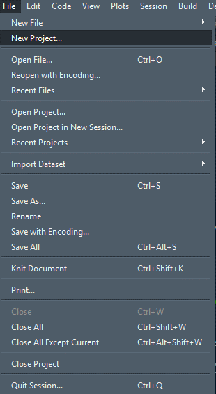
And you will see a window like this:
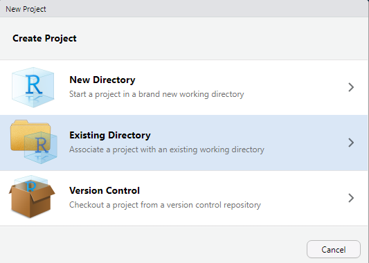
You can create a completely new directory here, but I prefer to set up the folder structure first. Let’s take a step back and do that in our C:\project directory first! In that empty folder, I like to create three base folders
dataoutputsscripts
Of course you can name them however you want, but for me this works best. You can also add other folders or subfolders if you feel you need a different structure for your project already. You can also always create more folders later, even within R using dir.create(). Your folder should look something like this now:
Figure 2.1: All folders will still be empty
Now we get back to the project creation window and click on Existing Directory:
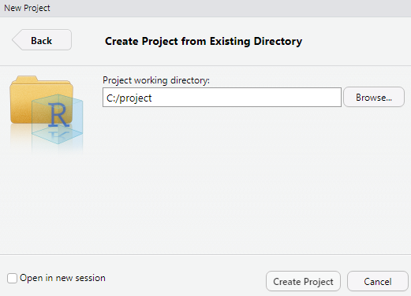
Here you can browse to the project folder (or enter the directory yourself). This creates a new project, R-Studio does the rest. What this mainly does is fix your working directory to that folder. There will be some additional files associated with this folder that save your user history (such as what you put in the console) and, most importantly, the working directory itself. Each time you open the project in that folder (or opening it within R-Studio), you will already be set to go! Your folder will now have this additional file after creating the project, which you can use to open it, it will also save a continuous .Rhistory file:
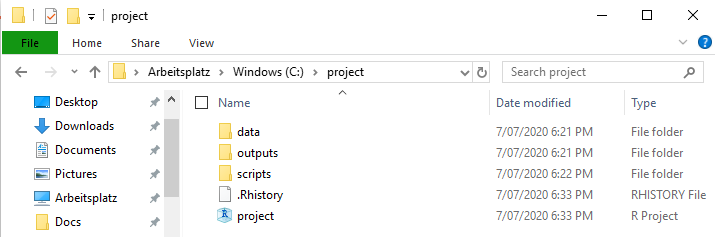
Now we can go and fill up the project with all the data we need for our analysis! In our case. that is the koala.csv file. All data we are going to use is going into the data folder, so copy the table in there:
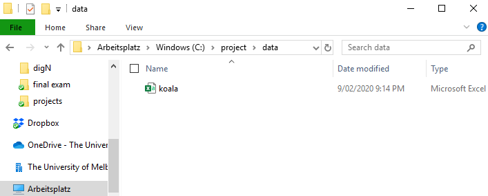
The way we work in the project now is referring to the sub-folders of our working directory using relative file paths. To load the koala data we do:
Processed data goes into the outputs folder:
Once you save your script file the first time, choose the scripts folder within your project folder to store it safely. If you later on need another folder, because maybe you got a lot of output files and need to sort them, you can create a new folder and write (or read) to/from it:
koala_region<-koala[5] #create a subset with only the region column
dir.create('outputs/region_analysis')
write.csv(koala_region, 'outputs/region_analysis/region_states.csv', row.names = F)If you have a large dataset, that you can’t move from its location to the project directory, you can still load it using the known syntax. You have to then specify the absolute file path:
#Let's assume the file is in your downloads folder
superlarge_file<-load('C:/Users/username/Downloads/superlargefile.file')The beauty of this way of handling your data is, that if you keep all files associated with your project within the project folder, you can move the project folder around as much as you want, give it to collaborators or even store it on a new computer if yours has exploded (given you’re backing up your files daily, which I hope you do ;)) and everything will be exactly where it should be and you can run through all your code without issues! When using projects and you re-open it, the R-Studio session is exactly where you left it when you last saved your workspace (likely when exiting the program). All script files you had open are still open, and .RData (which is stored in your project folder as well) is loaded, which means all variables in your environment are also still there, so you won’t need to re-run any of your code. The only thing you need to do still is load packages and recompile any Plots, as pane is emptied.
You will destroy the order by using setwd(), so keep your hands off it. If you have some new data that you want to use, copy it to the data or any respective folder you’re using, before loading the data into R. You can keep track of your directory in the files tab in R-Studio:
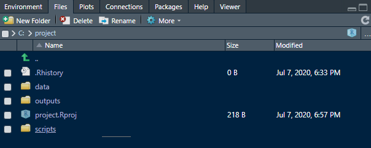
As you can see, you also can create new folders here using the buttons on top. If, by any chance your working directory has change (e.g. a function using different directories going astray…), you can rested the working directory to the project folder here as well. Using the green arrow, navigate to your project folder again and them press More and Set As Working Directory:
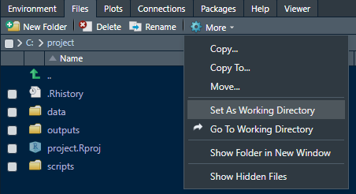
So, the one thing to remember when working in this way is: AVOID CHANGING YOUR WORKING DIRECTORY! or NEVER USE setwd()! . Both will break your code and you will either have to reset or rewrite. Especially in larger projects it becomes extremely tedious to keep track where you stored or saved data when using setwd() a lot. If you change computers or restructure your system, you will also need to change or restructure your R script (and/or file paths). But once you get used to this way of working, you will see it is very intuitive and saves a lot of time. If you still need to load data from elsewhere, use absolute file paths and for everything else, use your project folders and thus relative file paths.
Hope you find that helpful :)
2.2 Setting up the R-Studio User interface
When you first open up R-Studio, it probably looks something like this:
 :)**](data/projects-doc/proj9.png)
Figure 2.2: Image source is this useful tutorial :)
Your user interface (UI) is split into 4 windows and by default has the code editor in the top-left corner, and the Environment in the top-right. The code editor is where script files are created or opened and where you will spend most of your time. The console on the lower-left takes up a considerable amount of space, even though you only need it occasionally (whenever you run code that you don’t need to or don’t want to save to your script file). For my taste the window setup is counter-productive, because it takes the focus away from what is most important. You are going to work mainly with your script and environment pane. You can change the setup of your UI (and appearance) to make a bit more room and have R-Studio look like this:
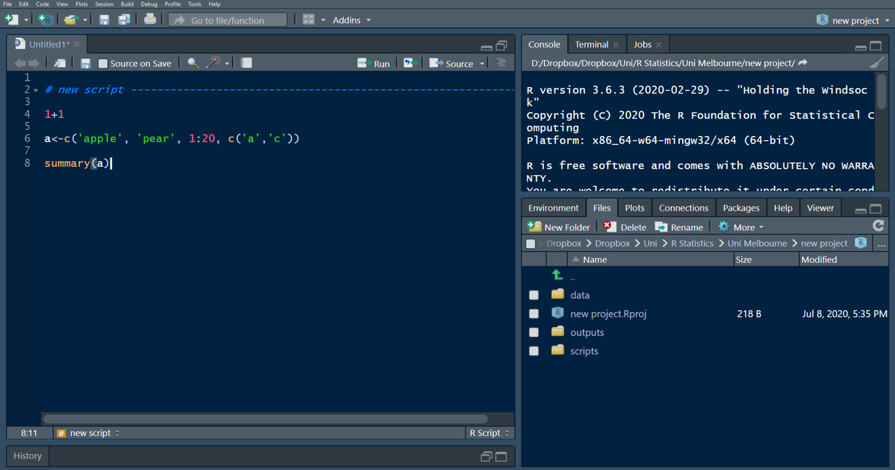
You will have lots of space to view and write your script, have the console placed on the top-right so you can see what’s happening when running through your lines of code, and everything else (such as the Environment, Files and Plots panes) are tabbed neatly on the lower-right. Additionally I have changed the appearance to a dark theme, because staring at a white for longer screen can be quite exhausting for the eyes and I prefer my text background in dark. To change to these (or any other preferred settings), go to the Tools tab at the top and select Global Options:
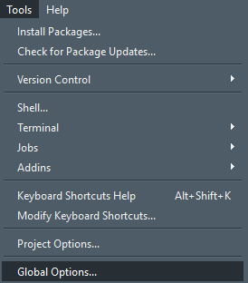
In the new window, first click on Pane Layout and select these settings:
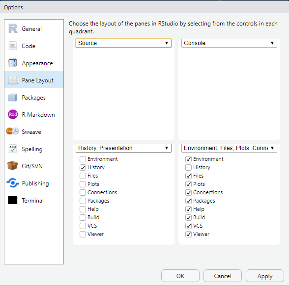
These are of course just recommendations based on my preferences and you can change as you go. Nevertheless I found that these setting work best when spending a lot of time in R-Studio. Now when you first set up the panes like this and no script is open, your History panel might still peek out. This is probably the least important pane and we can hide it by clicking on the small reduce button in the top right:
Figure 2.3: Click this one (once and then the one to the left of it once it shrunk halfway) to hide the History pane at the bottom and even open a new untitled script automatically.
Next we can change the appearance. In Global Options, click on Appearance. I use these settings, but there are lots of combinations and even more preferences:
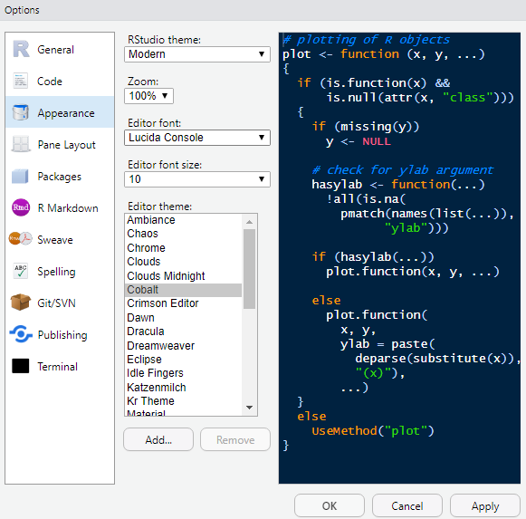
You may need to restart once you have chosen a theme and editor font/theme, for the changes to become active. One thing I find important is the option of coloring function calls. This means any function is highlighted in a different color than the rest of your code, which makes it (in my opinion), more readable. To make these changes go to Code and to the Display tab:
Figure 2.4: These are the settings I use.
Most importantly, tick ‘Highlight R function calls’, everything else is option. ‘Show syntax highlighting in console input’ can be nice if you work in the console occasionally, as it will color written code in the same way it does in you script. I like to be able to scroll further than my lowest line, so that I don’t always write at the bottom of my document, so I tick ‘Allow scroll past end of document’. Try these out and see how you like either. You can always change settings later on if you feel something doesn’t make sense in your workflow.
Happy R’ing in a professional setup! :)
2.3 Code folds and commenting
One last thing that really helps organizing your scripts is using what is called code folds in R. You can imagine them like titles or headings in a Word document. They subdivide your code into parts and let you browse through them more easily. You can also collapse code folds to hide them, which is great for large scripts, where you can easily loose track of where you did what after a while. Folds will show a small triangle next to the line number, which you can use to collapse or open that section. You can add code folds manually by using a # and then following it by at least four -, = or #. If you have more than one code fold, by clicking the arrow to the left of the fold, you can then hide the code between two sections easily:
# loading packages ----
library(tidyverse)
# loading data and checking ----
koala<-read.csv('data/koala.csv')
str(koala)
summary(koala)
# subsetting ----
subset1<-koala%>%filter(sex == 'female')%>%
select(age, weight, size, color)
subset2<-koala%>%filter(sex == 'male')%>%
select(age, weight, size, color)
# modelling ----
model_female<-lm(weight~size, data = subset1)
model_male<-lm(weight~size, data = subset2)
model_all<-lm(weight~size*sex, data = koala)
# checking models ----
summary(model_female)
summary(model_male)
summary(model_all)Now that you have set up the code in this way, you could for example hide sections that you are not currently working on to not loose track of the important code that you’re editing or adding to. Your code might then look like this, if you’re e.g. currently working on creating models:
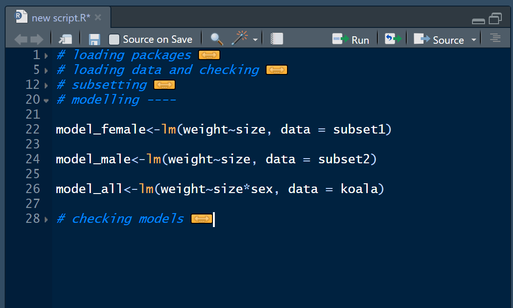
Some examples for valid code folds are e.g.
#### Section ####
# Section ----
# Section ====
#####
# Section ------------------
## Section =======Anything that has one # in front and at least four #, - or = will work. The easiest way to insert a code break in R-Studio though is to use the keyboard shortcut CTRL+Shift+R, which will open a windows where you can enter a title for the new fold. This fold will then look like those:
If you have a lot of fold, you can easily navigate through them by clicking the Jump to menu at toe bottom-left of your editor window:
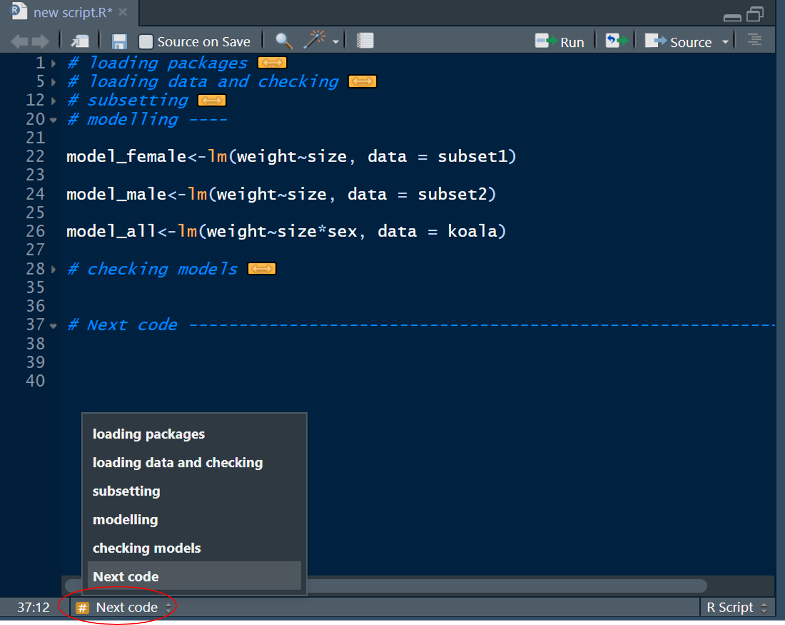
Which will open a drop-down menu with the titles of all your folds. When you click one, you will jump to the line of code, where the selected fold starts. Great stuff right?
The # is also used in R to include comments into your code. Anything that come after at least a single # is not run, when executing the lines of code selected. This can be useful to add some notes into your code, or exclude lines of code from your script that you don’t want to run, but still keep in the script:
# loading packages ----
library(tidyverse) #whenever I open R-Studion, I need to run this line!
# loading data and checking ----
koala<-read.csv('data/koala.csv')
str(koala)
summary(koala)
# subsetting ----
subset1<-koala%>%filter(sex == 'female')%>%
select(age, weight, size, color)
subset2<-koala%>%filter(sex == 'male')%>%
select(age, weight, size, color)
# modelling ----
model_female<-lm(weight~size, data = subset1) #I want to check if a seperate model of male and female makes sense
#model_male<-lm(weight~size, data = subset2) #no need to run this one at the moment
model_all<-lm(weight~size*sex, data = koala) #this is the overall model using the entire data
# checking models ----
summary(model_female)
#summary(model_male)
#summary(model_all)If you add a # after some lines of code like this:
It will act as a comment to your code. This cane be useful if you won’t be touching your code in a while but will come back to it later, to follow up on what you’ve done in the past. A # at the start of the line will ‘comment-out’ that line, which means it won’t run when executing your code.
The code will still remain in your script and you can un-comment it at any time. There are also keyboard shortcuts to comment and un-comment, which can make it easier to comment-out many lines at ones. First you select the lines of code with your mouse, then,
- to comment use
CTRL+Shift+C - to un-comment use
CTRL+Shift+Cagain and the#will be removed.
This is easier than clicking through your code sometimes. Nevertheless, it can only be used to ‘comment-out’ code, not to add comments at the end of code lines.
I hope these few tips will help you when starting out with R or make for a smoother workflow if you are already using R for a while but did not know about these few minor improvements, that can speed up your coding experience a lot!
Happy coding :)